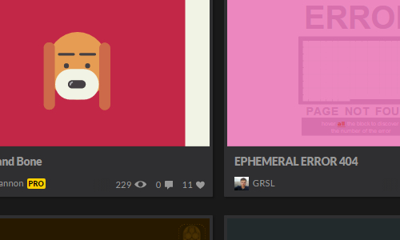
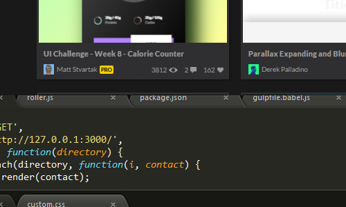
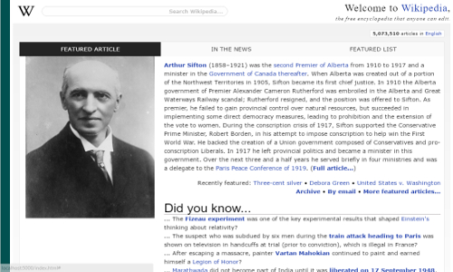
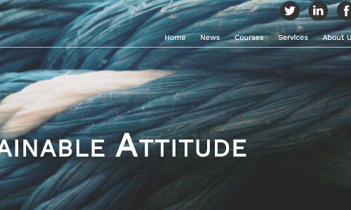
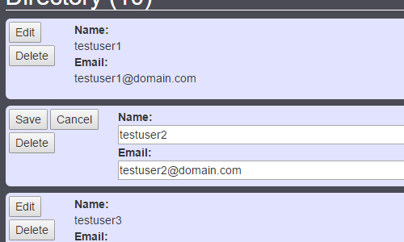

A small piece of TRUTH.
"I do not carry a sickle or scythe.
I only wear a hooded black robe when it's cold.
And I don't have those skull-like facial features you seem to enjoy pinning on me from a distance.
You want to know what I truly look like? I'll help you out.
Find yourself a mirror, while I continue."
HI. My name is Terry Lardner. I'm a self-taught Front-End Web Developer currently living in London, England. I enjoy building responsive websites and have taken a pro-active role in expanding my skillset further into single page applications (SPAs).
Want to get in touch? No problem.
Below, you may also check out more on my current skill set, work experience, code snippets and personal / professional projects at various levels of completion.
Enjoy.
Core Skills
- Client-side
- HTML5CSS3Javascript/ES6jQuery/AJAX
- Server-side
- MongoDBExpressjs/MongooseORMNodejs
- Other
- GithubRedminenpm/BowerGulpYeoman
Working knowledge of HTML5 / CSS3 / client-side Javascript (jQuery).
Working knowledge of package management tools (npm / bower) and build systems (gulp).
Working knowledge of Responsive Design, Cross-Browser Compatibility and popular CSS frameworks (Foundation, Bootstrap).
Experience with and basic knowledge of AJAX and server-side Javascript (Expressjs, Nodejs).
Working knowledge of version control and issue tracking tools (Github / TortoiseCVS / Redmine).
Projects / Demos
-
#CodePens

-
Portfolio v1.0

-
#Wikipedia

-
#Ice Cream

-
#Directory

https://github.com/terry-lardner/